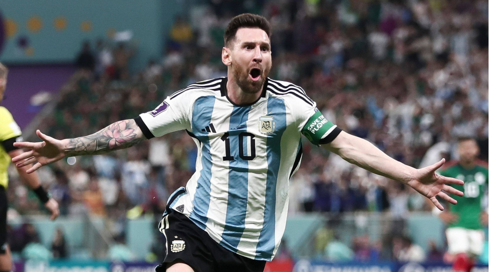
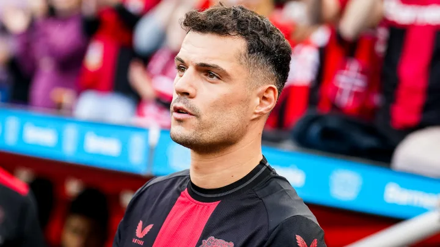

Lamine Yamal
Lamine Yamal Nasraoui Ebana (born 13 July 2007) is a Spanish professional footballer who plays as a right winger for La Liga club Barcelona and the Spain national team. Known for his pace, dribbling, passing, crossing ability, and ability to strike powerful long-range shots, he is widely regarded as one of the best young footballers in the world
Lionel Messi
Lionel Andrés Messi also known as Leo Messi, is an Argentine professional footballer who plays as a forward for and captains both Major League Soccer club Inter Miami and the Argentina national team. Widely regarded as one of the greatest players of all time, Messi set numerous records for individual accolades won throughout his professional footballing career such as eight Ballon d'Or awards and eight times being named the world's best player by FIFA.[note 2] He is the most decorated player in the history of professional football having won 45 team trophies,[note 3] including twelve league titles, four UEFA Champions Leagues, two Copa Américas, and one FIFA World Cup. Messi holds the records for most European Golden Shoes (6), most goals for a single club (672, with Barcelona), most goals (474), hat-tricks (36) and assists (192) in La Liga, most matches played (39), assists (18) and goal contributions (34) in the Copa América, most matches played (26) and goal contributions (21) in the World Cup, most international appearances (189) and international goals (112) by a South American male, and the second-most in the latter category outright. A prolific goalscorer and creative playmaker, Messi has scored over 850 senior career goals for club and country.

Cristiano Ronaldo
One of the world's most marketable and famous athletes, Ronaldo was ranked the world's highest-paid athlete by Forbes in 2016, 2017, 2023, and 2024 and the world's most famous athlete by ESPN from 2016 to 2019. Time included him on their list of the 100 most influential people in the world in 2014. Ronaldo is the most popular sportsperson on social media: he counts over 1 billion total followers across Facebook, Twitter, YouTube and Instagram, making him the first person to achieve that feat. In 2020, Ronaldo was named to the Ballon d'Or Dream Team and he is the first footballer and the third sportsman to earn US$1 billion in his career.
Granit Xhaka
Granit Xhaka (Albanian: [gɾanit d͡ʒaka], born 27 September 1992) is a Swiss professional footballer who plays as a midfielder for Bundesliga club Bayer Leverkusen and captains the Switzerland national team. Xhaka began his career with FC Basel and won the Swiss Super League twice. He moved to Borussia Mönchengladbach in 2012, developing a reputation as a technically gifted player and natural leader alongside criticism for his temperament, and acted as club captain from 2015, twice leading the team to UEFA Champions League qualification.